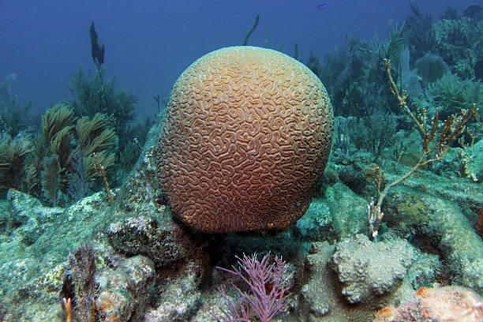
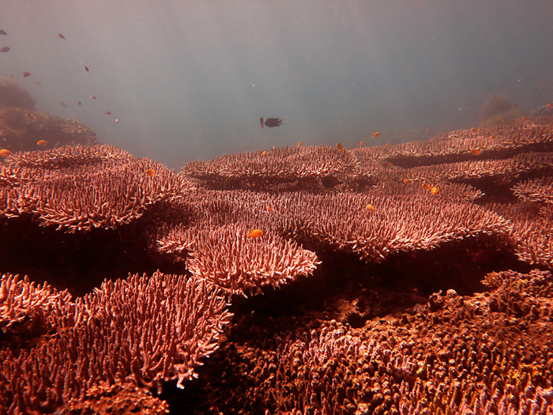
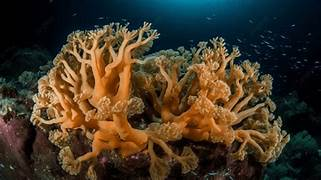

Jenis-jenis Terumbu Karang
Terumbu karang memiliki beragam jenis dengan bentuk dan karakteristik unik. Mari kita eksplorasi beberapa jenis terumbu karang yang menakjubkan!

Karang Otak
Karang ini memiliki bentuk yang menyerupai otak manusia dengan lekukan-lekukan yang khas.

Karang Meja
Karang meja memiliki bentuk datar yang lebar, menyerupai meja di bawah laut.

Karang Cabang
Karang ini memiliki struktur bercabang yang indah, menyerupai ranting pohon di bawah laut.

Karang Lunak
Berbeda dengan karang keras, karang lunak memiliki tekstur yang lembut dan bergerak dengan arus air.